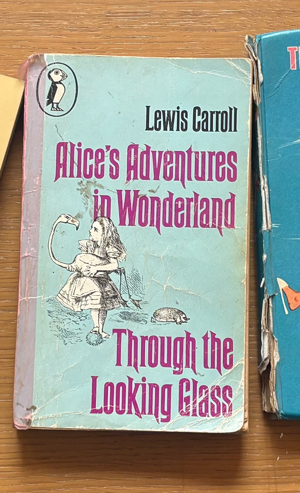

Alice in Wonderland! Down the rabbit hole! Written by Lewis Caroll in 1865. Of course this LSD trip children's story factors into my desire to return to some kind of weird, dreamlike version of my childhood. I think that this story can be, and has been, viewed in so many ways, and as a metaphor for so many different things, but I honestly just really enjoy taking it at face value. I reread this book pretty often, and have an insanely beaten up and stained old copy that was given to my mother when she was young.
I reread the book because I find it hilarious. So so much funny and weird stuff happens in Alice in Wonderland and I want everything I do to have some element of humour in it. I can forgive most things in this life, but one thing that I really hate is humourlessness.
click here to learn more

make space!